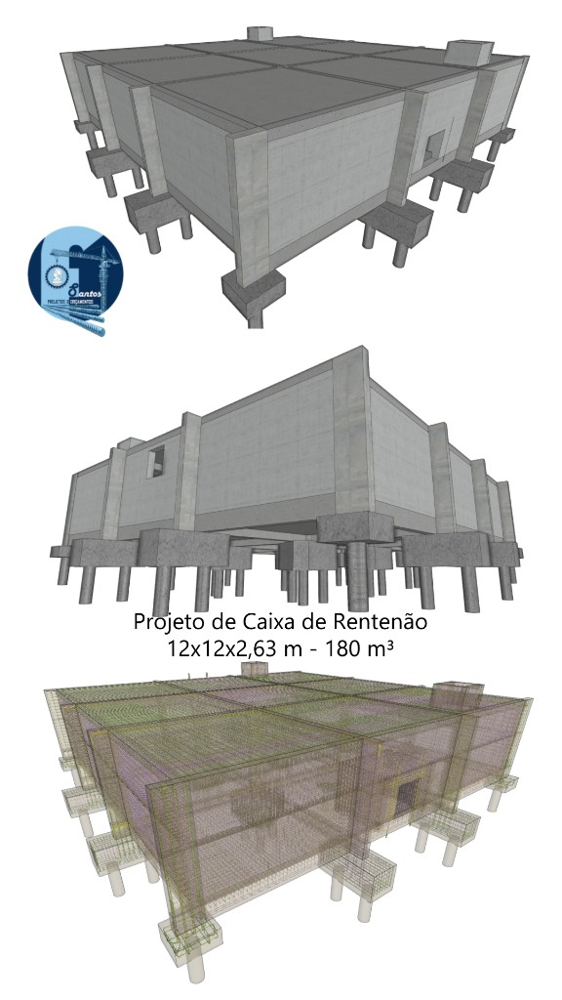
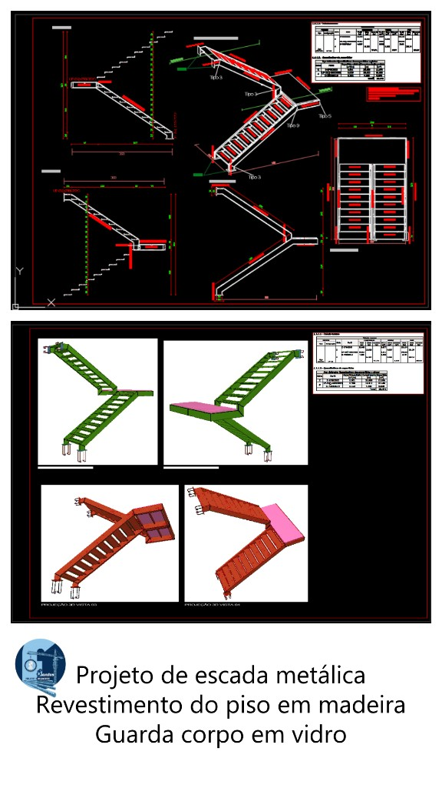

Projeto de Caixa de Retenção
12×12×2,63 m — 180 m³
Projeto estrutural, estrutura metálica e complementares em Manaus — galpão, ponte rolante, clínica e obra pública, com ART.
100+ projetos executados
Sou o engenheiro civil Francirley Pereira Santos, CREA 31.410-AM, de Manaus. Atuo na elaboração de projetos com ART — do estudo preliminar ao detalhamento executivo — com foco em estruturas metálicas e concreto armado. Já ultrapassei 100 projetos entregues, entre residências, clínicas, galpões, edifícios comerciais, contenções, reformas e obras públicas.
Na indústria, destaco o trabalho com a Amazon Aço e a linha Sol Master: pontes rolantes de vários vãos e capacidades (incluindo a dupla de 40 t) e galpões metálicos com ponte rolante. No setor público, integro equipes multidisciplinares em obras da SEMINF — como a Feira do Mutirão, no Novo Aleixo — com estrutura em concreto e metálica, hidrossanitário e prevenção de incêndio. Também desenvolvo projetos de igreja, muro de arrimo, arquitetura residencial e comercial, reforço estrutural e remoção de pilares, sempre com pranchas claras para fabricação e execução.
Além do estrutural, elaboro arquitetura, fundações, hidrossanitário (água fria e quente, esgoto e drenagem), instalações elétricas, SPDA, PPCI, gás e ar-condicionado. Trabalho com geoprocessamento (ArcGIS e QGIS) e orçamentos baseados no SINAPI, para que o projeto caminhe junto de quantitativos e custos consistentes. Desenvolvo ainda softwares próprios — o FSantos CalcFoundation, de cálculo de fundações, e o Santos ArchiRender AI, de renderização com inteligência artificial.
Neste site reúno o portfólio, ferramentas gratuitas de pré-dimensionamento com memória de cálculo, tabelas de engenharia, o orçamento estimativo de obra (SINAPI) e o pedido de orçamento para contratação da elaboração dos projetos. O objetivo é simples: entrega técnica responsável, com ART, prazo e escopo definidos para a obra em Manaus e no Amazonas.
Ferramentas: Revit · AutoCAD · Civil 3D · QiBuilder · ArcGIS · QGIS · FSantos CalcFoundation · Santos ArchiRender AI
Obras escolhidas para abrir o portfólio. As imagens desta faixa são atualizadas na área restrita.

12×12×2,63 m — 180 m³

Revestimento do piso em madeira e guarda-corpo em vidro
As obras em destaque ficam no início. O filtro Ponte rolante reúne as pranchas de cada modelo num único conjunto. O restante da lista reúne os outros projetos.
Calculadoras de pré-dimensionamento e o orçamento estimativo de obra (SINAPI) são apoio técnico. O custo da obra não é o honorário do projeto. Para contratar a elaboração, use o pedido de orçamento ou o WhatsApp.
Abrir ferramentas Orçamento estimativo de obra (SINAPI)Pedido de elaboração de projetos, com ART. Não inclui execução da obra, materiais ou mão de obra. O valor dos honorários é definido depois da análise do escopo — em até 1 dia útil.
Prefere falar direto? Chame no WhatsApp ou envie o pedido acima.
WhatsApp (92) 99226-2786 Solicitar orçamento